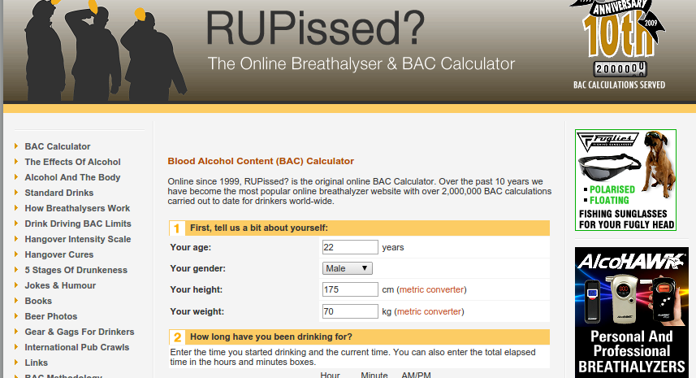
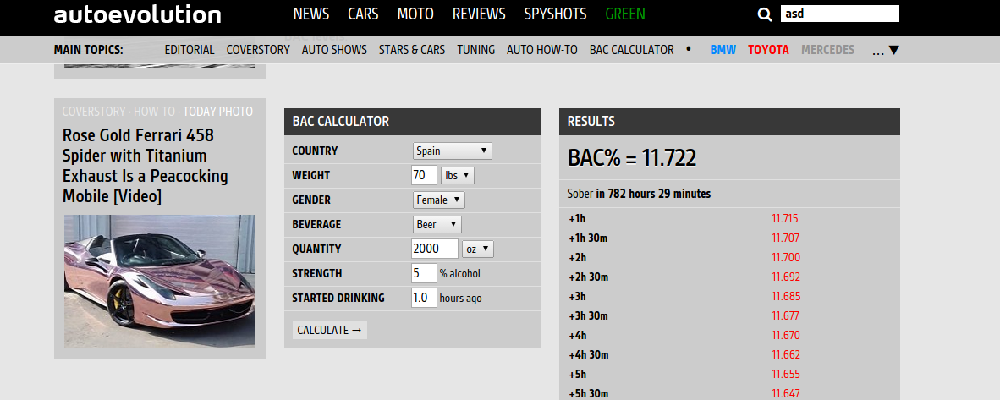

Project Proposal - Assignment 4
The Group members
- Nicolaat - Nicolas Almagro Tonne
- Kasperr - Kasper Rynning-Tønnesen
- Mariusmb - Marius Meland Bang
- Sondrejw - Sondre Johan Widmark
The project
About the project
Our project is a website which aims to give the user a statistical overview of their alcohol consumption over the course of a night.
The user registers each alcoholic bevarage he or she consumes along with some personal attributes (such as height and weight) which affect the blood alcohol level, and in return receives his or her current estimated blood alcohol content (BAC), a prediction of future levels and a suggestion on whether or not to drink more.
Potential users and special requirements
Potential users are smart phone owners who like drinking responsibly. Basically anyone who desires to control their alcohol intake so as to allow for a fun night out without running the risk of health hazards and public humiliation.
The site will have a responsive design, with simple interaction and an optimal viewing experience for both smart phone users and users of other devices. The main focus will be on smart phone users, seeing as most people do not have access to any other web browsing capable devices while they are out drinking. This means that we don't have to be concerned with older browsers. It also means that we have to implement a design that works with different resolutions.
Pages
Interaction and dynamic functions:
The layout of the site will change depending on whether you're logged in or not. We plan to have a default page that anyone can use without having to log in. First time users will have the option to sign up after filling out their attributes, so that these attributes can be stored for succeeding uses. Signing up should be a simple process, preferably only demanding a unique user name and an optional password.
Since most users will be using a smart phone to browse the site, it is essential that the graphical user interface we implement is designed for readability and interaction on small screens with different resolutions. We must take into account that the user only has access to a touch screen and a small keyboard. The keyboard often covers up a significant part of the screen and we will therefore attempt to avoid having too many keyboard interactions. Designs such as drop down menus, thumb-sized buttons, and sliders will be considered for the final design.
After logging in or entering his or her personal attributes for the first time, user will have access to the main page. This is where the user will be able to add the alcoholic beverages he or she drinks during the night. This will be done either by clicking on some preset values that we believe will be used most frequently (e.g. Beer 4.7% 0.5L, Wine 12% 175mL, Shot 40% 2cL) or by entering a custom beverage. Such custom beverages will be added to the list of options along with the preset values so that the user won't have to enter this multiple times.
The data entered by the user will then be processed, and the user will see some relevant stats, graphs, warnings, encouraging messages etc. related to his or her alcohol consumption.
What we've learned from watching other web sites:
From watching other sites we learned that the sitemap and menu have to be relevant to the page, and that we need to avoid having too many ads. Since we do not initially seek to profit from this, we may drop ads altogether. The site has to be simple to use and the user has to be able to navigate easily using just your keyboard and basic touch funtionality. The forms also have to be easily filled.
The sites we have looked at below both include some elements we desire for our own web site as well as some elements we would like to change. The "good" site we evaluated was considered good mainly because of it's simple design, but this simplicity also means less configuration. For example, one is not allowed to select multiple beverages at the time. The "bad" page has increased versatility, but the poor design makes it somewhat troublesome to navigate. We seek to find the common ground between the two designs to allow for simplicity without sacrificing versatility.
Multimedia files
Our site will not require a large amount of multimedia. Most of our design will be done in CSS and needs for multi-media content is mostly limited to simple pictures. We will have a simple colorful design with images beeing graphically designed drawings. The pictures we do need we will draw ourselves.
Bad site
http://rupissed.com/

- Page title: "R U Pissed? - Online Breathalyzer Test and Blood Alcohol Content (BAC) Level Calculator - Hangover Cures". This title could definitely have been briefer. The "Hangover Cures" implies that hangover cures are to be found on this specific page or on some other page the user can easily navigate to, but these so-called hangover cures are hidden among other items in the sidebar.
- Image text alternatives ("alt text") (pictures, illustrations, charts, etc.): They got a lot of errors, regarding missing alt text on the images
- Text:
- Headings: Headings are present. Some questionable color choices.
- Contrast ratio ("color contrast"): Its a lot of colors, because of the "hardcoded" ads on the webpage, but the contrast is acceptable. The ads are quite intrusive and serve to move the focus away from the actual content of the web site.
- Resize Text: No overlapping text when you're resizing.
- Interaction:
- Keyboard access and visual focus: Bad keyboard access, when working with the page using only the TAB key, it takes some time until you get to the input fields. Image links are badly outlined when they are tabbed to.
- Forms, labels, and errors (including Search fields): They have JS alert when something invalid is submitted,
but there is no information as to which of the input fields are wrong.
- General:
- Multimedia (video, audio) alternatives: Way too many ads
- Basic Structure Check: Poor sitestructure.The layout is messy and it takes some effort to navigate. The sidebars are almost hidden among all the ads. No hierarchical structure or any structure that could have made it simpler for the user is present. Way too much on the site seems irrelevant except the index.html.
Good site
http://www.autoevolution.com/bac/

- Page title: Precise and concise, fairly brief.
- Image text alternatives ("alt text"): Alt texts are present.
- Text:
- Headings: Good use of headings with different sizes.
- Contrast ratio: High contrast (black/white), some white on gray (bad).
- Resize Text: Text inside elements resizes properly, but top bar becomes too big when zoomed in.
- Interaction:
- Keyboard access and visual focus: Good overall. Selection of fields using the TAB key follows a logical order and you have access to everything.
- Forms, labels, and errors: Clearly labeled forms, some have a bit strange name attr.
- General:
- Multimedia (video, audio) alternatives: No multimedia present.
- Basic Structure Check: The site offers a decent layout, but it doesn't change on small screens. The visuals are good, but the "Results" table might be a bit too detailed. Its height is only limited by how long it takes for the one who entered the data to get sober (for example, if one does not sober up before 18 hours has passed the table will contain 36 elements). This breaks up the structure of the page and could have been altered with a different solution for the layout or simply a graph instead of the table.